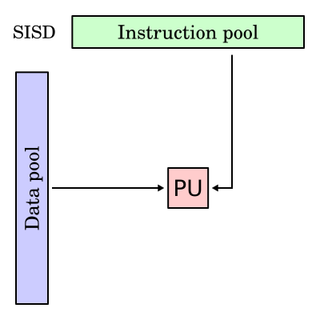
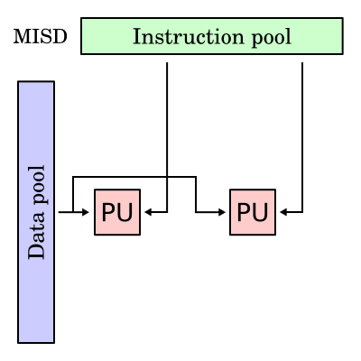
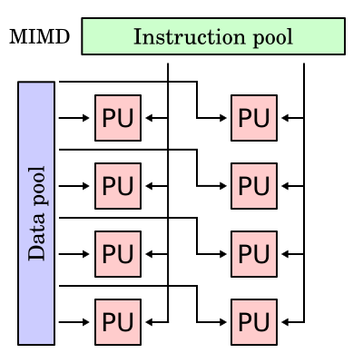
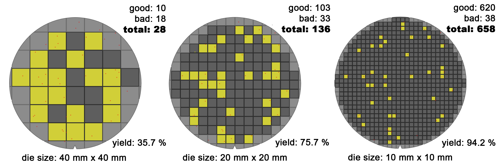
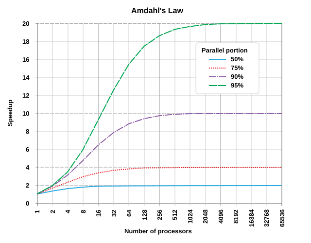
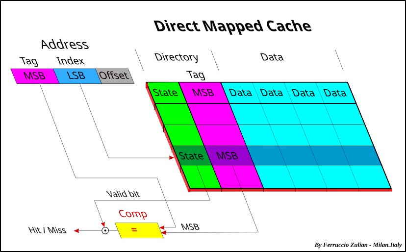
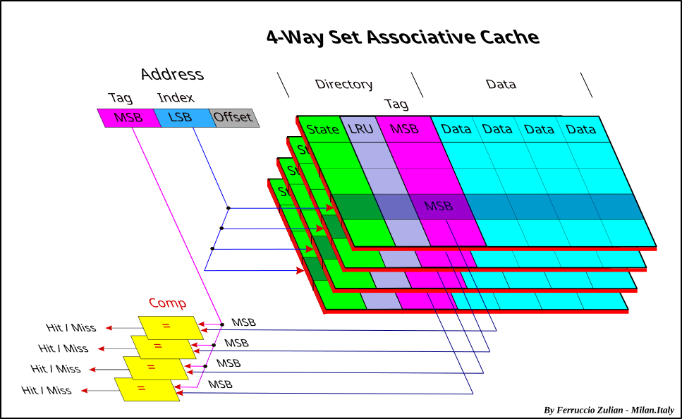
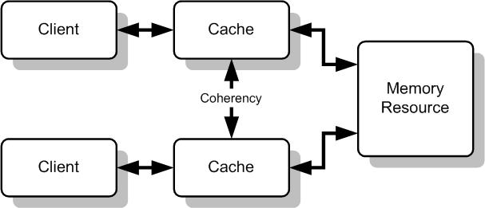
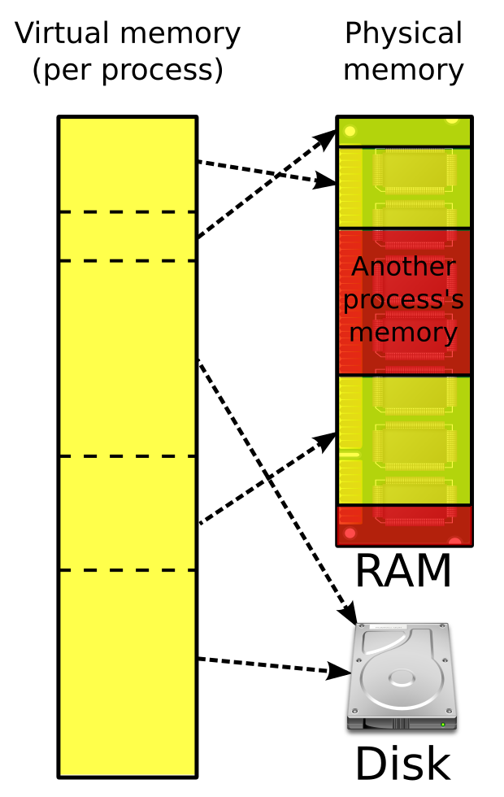

Advanced Computer Architecture
What the papers show. In the 2022 and 2023 papers, Q1–Q3(a) came from Unit 1 (CO1): ISA, wafer yield and cost, Amdahl's law, performance measures, Moore's law, Flynn, and CPI/execution time. Q3(b)–Q5 came from Unit 2 (CO2): cache coherence, cache optimisations, AMAT, mapping, tag/index/offset numericals, and virtual memory with TLB. Four questions appeared in both years: the wafer-yield numerical, Amdahl's law, the 16-way set-associative tag/index/offset numerical (identical both years) and virtual memory. Master these first. At least one numerical appears in almost every question pair.
Fundamentals, Trends & Performance
What computer architecture is, how technology trends shape it, and how performance is measured.
Syllabus: architecture & technology trends · Moore's law · classification of parallel computers · performance-based computing · trends in technology, energy, power and cost · dependability · fabrication yield · measuring performance · benchmarks · Amdahl's law · Lhadma's law
§ 1.1Defining Computer Architecture & the Instruction Set Architecture
In the original sense, "architecture" means taking building materials and putting them together to make a building suited to its purpose. Computer architecture does the same with transistors, memories and wires to make a machine suited to its workloads: faster, smaller and cheaper, so that new applications become possible.
The key idea is abstraction. A computer is a stack of levels, each hiding the one below: application → operating system → compiler/firmware → instruction set architecture → processor, memory, I/O → datapath & control → digital design → circuit design → layout. The ISA is the interface in the middle: software above it is written against the ISA, and hardware below it implements the ISA. Architecture must coordinate these many levels under a rapidly changing set of forces: technology, applications, programming languages, operating systems and history. The professor summarises this as A = F / M: architecture is the art of meeting Functional requirements under the constraints of the available Materials/technology.
| Computer Architecture | Computer Organisation |
|---|---|
| Attributes visible to the programmer: instruction set, data types, addressing modes, number of registers, I/O mechanisms | The operational units and interconnections that realise the architecture: control signals, interfaces, memory technology |
| Answers what the machine does | Answers how it does it |
| e.g. "Does the machine have a multiply instruction?" | e.g. "Is multiply done by a dedicated unit or by repeated addition?" |
| Stays stable across a family (x86 since 1978) | Changes with each generation (8086 → Core i9) |
What the ISA specifies:
- Memory organisation: address space (how many locations can be addressed?) and addressability (how many bits per location?).
- Register set: how many, what size, how they are used.
- Instruction set: opcodes (operation selection codes), data types (byte, word, float), and addressing modes (coding schemes to access data: immediate, register, direct, indirect, displacement, indexed…).
Design goals of a good ISA: implementability (supports a range of cost/performance implementations, including high-performance ones), programmability (easy to express programs and to compile to), and backward/forward/upward compatibility (programs run across generations: 8086 → 286 → 386 → 486 → Pentium → Pentium II/III/4 all run the same binaries).
The five stages of instruction execution (PYQ 2022 Q1a)
- Instruction Fetch (IF): load the next instruction from memory at the address in the Program Counter into the Instruction Register; PC ← PC + 4.
- Instruction Decode (ID): turn the opcode bits into the CPU configuration needed to execute it (control signals); read the source registers; sign-extend immediates.
- Execute (EX): perform the arithmetic or logical operation in the ALU, or compute the effective address for loads and stores, or evaluate the branch condition.
- Memory (MEM): access data memory: a load reads, a store writes. Other instructions pass through.
- Write-back (WB): write the result into the destination register.
Example: LW R1, 8(R2) → IF fetches it; ID reads R2; EX computes R2+8; MEM reads memory[R2+8]; WB writes it into R1. ADD R3,R1,R4 does nothing in MEM.
Popular ISAs
| ISA | Width | Origin / notes |
|---|---|---|
| x86 | 16/32-bit | Intel 8086 (1978); Intel family, also AMD. CISC. |
| x86-64 | 64-bit | 64-bit extension proposed by AMD, adopted by Intel |
| ARM | 32 & 64-bit | Acorn RISC Machine → ARM Holdings; phones, Apple M-series |
| MIPS | 32 & 64-bit | Microprocessor without Interlocked Pipeline Stages; the teaching RISC |
| SPARC | 32 & 64-bit | Sun Microsystems |
| PIC | 8–32-bit | Microchip; microcontrollers |
| Z80 | 8-bit | Zilog, 1976 |
ISA extensions add specialised instructions: Intel MMX, SSE, SSE2, AVX (SIMD); AMD 3DNow!. Today RISC-V is an open, royalty-free ISA gaining ground in academia and embedded systems.
When Apple moved the Mac from x86 to its own ARM-based M1 (2020), every application had to be recompiled or translated (Rosetta 2) because the ISA changed. When Intel went from Pentium 4 to Core, nothing had to be recompiled because only the organisation changed. The ISA is a contract: once software depends on it, it lasts for decades. That is why x86 still carries 1978 features, and why a well-designed ISA is one of the most consequential decisions in computing.
CISC (x86) uses powerful instructions to reduce instruction count, but these can lengthen the clock cycle and complicate pipelining. RISC (ARM, MIPS, RISC-V) uses simple, fixed-length instructions for an easy pipeline and fast clock, but executes more instructions. Modern x86 chips decode CISC instructions into internal RISC-like micro-ops, so the distinction now lies more in the ISA contract than in the hardware. Compatibility is both the ISA's strength and its burden: legacy instructions cost silicon and power forever.
- Definition with its three categories: system design, ISA, microarchitecture.
- ISA = all programmer-visible components: memory organisation, registers, instruction set (opcodes, data types, addressing modes).
- Design goals: implementability, programmability, compatibility.
- Five stages IF–ID–EX–MEM–WB with a diagram and a one-line explanation each (this was asked in 2022).
- Architecture vs organisation, examples of ISAs, RISC vs CISC.
§ 1.2Computer Architecture & Technology Trends: a History
Architecture follows technology. Each era's design philosophy was a response to what the available technology made cheap or expensive. The professor's timeline:
| Era | Technology driver | Architectural response |
|---|---|---|
| Pre-WWII | Mechanical parts | Mechanical calculating machines |
| WWII – 1950s | Relays → vacuum tubes | Stored-program computers; high-level languages appear |
| 1960s | Transistors, integrated circuits | Miniaturisation and packaging; families (IBM System/360, the first ISA/implementation separation) |
| 1970s | The "semantic gap" between HLLs and hardware | Complex instruction sets, language support in hardware, microcoding (CISC) |
| 1980s | Better compilers, pipelining | "Keep It Simple, Stupid": RISC vs CISC; shift complexity into software |
| 1990s | Too many transistors: what to do with them? | Large on-chip caches, prefetching hardware, speculative execution, special-purpose instructions, multiple processors on a chip |
| 2005 → | Power wall; end of Dennard scaling | Multicore, GPUs, domain-specific accelerators (TPUs, NPUs), chiplets |
Goals of a computer designer throughout: control complexity, maximise performance, minimise cost, using levels of abstraction (silicon and metal → transistors → gates → flip-flops → registers → functional units → processors → systems).
The syllabus mentions "the myopic view", which is the mistake of treating computer architecture as only instruction-set design. Hennessy & Patterson describe this as the old, narrow definition. The modern view sees architecture as the combination of ISA + organisation (microarchitecture) + hardware, designed together to meet goals of performance, power, cost, availability and dependability for target markets. A designer who optimises the ISA while ignoring memory, power and cost produces a machine nobody can build or afford.
| Class | Design priority | Example |
|---|---|---|
| Personal mobile devices (PMD) | Energy efficiency, cost, responsiveness | Smartphones (ARM SoCs) |
| Desktop | Price-performance | Laptops, workstations |
| Servers | Availability, scalability, throughput | Database and web servers |
| Clusters / warehouse-scale computers | Price-performance per watt, availability | Google, AWS datacentres |
| Embedded / IoT | Price, energy, application-specific performance | Microwave, car ECUs |
- The era-by-era table (especially the 70s CISC → 80s RISC → 90s caches and speculation → 2005 multicore).
- The myopic view: architecture ≠ just ISA.
- The classes of computers and their priorities.
§ 1.3Moore's Law and Its Applications
Every two years or so, chipmakers fit twice as many transistors in the same area for about the same cost. Over 50 years that compounds into chips billions of times more capable than their ancestors.
Worked example (professor's): In 1988 the Intel 386 SX had 275,000 transistors. Predict the Pentium II (1997).
(The real Pentium II had about 7.5 million, which is close, and shows how reliable the rule was.)

- Cheaper power over time: a chip with 2,000 transistors cost $1,000 in 1970, $500 in 1972, $250 in 1974, $0.97 in 1990, and under $0.02 to make today. A $3,000 PC of 1990 would cost about $5 today.
- Linked capabilities: processing speed, memory capacity, sensors and even the pixel size in digital cameras all improve at roughly exponential rates.
- New things become possible: roughly every two years devices can do twice as many new and unexpected things. New opportunities, new competitors, companies evolving or dying.
- For architects: a steadily increasing transistor budget to spend on caches, pipelines, speculation and cores.
Moore himself said "It can't continue forever": miniaturisation eventually reaches the atomic level. Physicist Michio Kaku predicted a collapse "in about ten years or so", with a slowing already visible because computer power cannot keep its exponential rise on standard silicon, and Intel has acknowledged the slowdown. Three effects hit at once: (1) the power wall, since Dennard scaling ended around 2005 and shrinking transistors no longer cut power per transistor proportionally, so clock rates stalled near 3–5 GHz; (2) the ILP wall, since extracting more instruction-level parallelism from one thread gave diminishing returns; (3) the memory wall, since DRAM latency improved far more slowly than processor speed.
Adaptation and diversification strategies:
- Multi-core processors: instead of one faster core, put 2, 4, … 64 cores on a die (Intel Core Duo 2006; AMD EPYC with 96+ cores today). Performance comes from thread- and data-level parallelism, which moves the burden to software (Amdahl's law now dominates).
- Innovations in memory hierarchy: large multi-level caches (L1/L2/shared L3, hundreds of MB of "3D V-Cache"), on-package HBM, prefetchers, non-blocking caches, all to hide the memory wall.
- Specialisation: GPUs, TPUs, NPUs, video codecs: domain-specific accelerators that give 10–100× efficiency on narrow tasks.
- 3D integration and chiplets: stacking dies (Kaku's "chip-like computers in three dimensions") and assembling smaller chiplets (AMD Ryzen, Apple M-Ultra) to improve yield and cost.
- New devices and materials: FinFET → gate-all-around transistors, EUV lithography, and longer term molecular and quantum computing.
- Power management: dynamic voltage-frequency scaling, dark silicon, turbo boost.
Moore's Law was partly a self-fulfilling prophecy: the industry planned its roadmaps around it. Transistor counts are still rising through density and 3D stacking, but cost per transistor stopped falling at the newest nodes, and single-thread performance growth slowed from about 50%/yr to under 5%/yr. So "Moore's Law is dead" is only half true: the transistor count continues, but the free speed-up for software has ended.
- Statement, origin (Gordon Moore, 1965), "rule of thumb, not a law".
- Equation Pn = P0 × 2ⁿ with n = years/2, and the 386 SX → 6.2 M worked example.
- Implications (cheaper, more capable devices).
- Limits (atomic scale; power, ILP and memory walls) and adaptations: multicore and memory-hierarchy innovations are named explicitly in the 2023 PYQ.
§ 1.4Classification of Parallel Computers & Flynn's Taxonomy
Ask two questions: how many different instructions are running at once, and on how many pieces of data? One or many for each gives four boxes.
| Parallelism in hardware | Parallelism in software |
|---|---|
| Uniprocessor: pipelining; superscalar, VLIW | Instruction-level parallelism (ILP) |
| SIMD instructions, vector processors, GPUs | Data parallelism |
| Multiprocessors: symmetric shared-memory (SMP); distributed-memory; chip-multiprocessors (multicores) | Task-level parallelism |
| Multicomputers (clusters) | Transaction-level parallelism |




Plate A4 · Flynn's four classes "PU" = processing unit. The instruction pool is at the top and the data pool on the left. How to sketch: draw a 2×2 grid (rows: single or multiple instruction; columns: single or multiple data) and put one mini-diagram in each cell. Source: Wikimedia Commons, SISD/SIMD/MISD/MIMD.svg (openly licensed; see file pages).
- SISD (Single Instruction, Single Data): the standard uniprocessor. At any time one instruction operates on one data item; a traditional sequential architecture (von Neumann). It can still use pipelining. Examples: early PCs, simple microcontrollers.
- SIMD (Single Instruction, Multiple Data): the same instruction is executed on many data elements at once; a data-parallel architecture. Examples: vector processors (which achieve it by pipelining), array processors, SIMD instructions (SSE, AVX, ARM NEON), GPUs. Ideal for images, matrices and ML.
- MISD (Multiple Instruction, Single Data): different instructions on the same data stream. Rare in practice. Examples: fault-tolerant computers that run redundant computations and vote (e.g. Space Shuttle flight computers), systolic arrays (often cited), near-memory computing (Micron Automata processor).
- MIMD (Multiple Instruction, Multiple Data): each processor fetches its own instructions and operates on its own data: the "common" multiprocessor. The most flexible class, and easier and cheaper to build from off-the-shelf processors. Examples: multicore CPUs, SMPs, clusters, supercomputers.
Classification by physical memory organisation (for MIMD)
| UMA / SMP (centralised shared memory) | NUMA (distributed shared memory) | |
|---|---|---|
| Memory | Physically centralised; all memory is the same distance from all processors | A portion of memory is attached to each processor node |
| Access time | Uniform | Local access much faster than remote access |
| Scalability | Memory bandwidth is fixed and shared, so it does not scale to many processors | If most accesses are local, bandwidth grows linearly with processors |
| Used in | Single-socket chip multiprocessors (CMPs) | Multi-socket CMPs, e.g. Intel Nehalem, AMD EPYC multi-socket |
Flynn's taxonomy (1966) gave the field its first common vocabulary for parallelism, and each class matches a stage of computing history:
- 1940s–70s, the SISD era: von Neumann machines. Performance came from faster technology and later pipelining, still one instruction stream.
- 1970s–80s, the SIMD rise: ILLIAC IV (array processor), Cray-1 (vector supercomputer, 1976), Connection Machine CM-1/2. Scientific computing needed operations on huge arrays.
- 1990s, the MIMD takeover: commodity microprocessors became so cheap that clusters and SMPs (Beowulf, IBM SP2) displaced custom vector machines. MIMD's flexibility won.
- 1990s–2000s, SIMD returns inside MIMD: MMX/SSE/AVX put SIMD inside each core.
- 2005–today, hybrids: multicore CPUs (MIMD) + GPUs (SIMD/SIMT) + accelerators. A modern laptop is all four classes at once.
Strengths: simple, lasting, and still the first way we describe a machine. Weaknesses: (1) it is too coarse, since almost everything today is "MIMD" and the class says nothing about memory organisation (UMA vs NUMA), interconnect or programming model; (2) MISD is nearly empty, which suggests the grid is not a natural partition; (3) it cannot describe modern hybrids, e.g. GPUs are "SIMT" (single instruction, multiple threads) and pipelined vector units blur SISD and SIMD; (4) it ignores granularity (fine-grained vs coarse-grained). Later taxonomies (Feng's by word/bit parallelism, Händler's, Duncan's) and the SPMD/MPMD programming-model terms extend it. Even so, Flynn remains the first reference point in every textbook: an enduring, if incomplete, lens.
- Flynn (1966), the basis: instruction streams × data streams.
- All four classes with definition, diagram and real examples (vector/GPU for SIMD; systolic or fault-tolerant for MISD; multicore for MIMD).
- UMA vs NUMA sub-classification.
- For "critically analyse": the historical timeline plus limitations (too coarse, MISD empty, hybrids, SIMT).
§ 1.5Trends in Technology: Bandwidth, Latency, Transistors & Wires
An architect must design for the technology that will exist when the product ships, often 3–5 years after design begins. So architects follow the growth rates of the technologies that shape architecture. The professor lists four families: trends in technology, in power, in cost and in reliability.
| Technology | Trend (per year, approximate) |
|---|---|
| Logic (IC) manufacturing | Transistor density ~35% · die size ~10–20% · transistors per chip ~40–55% |
| Memory (DRAM) | Capacity ~40% historically (now slowing, doubling every 3–4 yrs or more) |
| Storage (magnetic disk) | Density ~30% since 2004; flash (SSD) capacity grew 50–60%/yr |
| Network | Switch and link bandwidth, e.g. 1 → 10 → 100 → 400 Gb/s Ethernet |
| Component | Bandwidth improvement | Latency improvement |
|---|---|---|
| Processors | 10,000 – 25,000× | 30 – 80× |
| Memory & disks | 300 – 1,200× | 6 – 8× |
Rule of thumb: bandwidth grows at least as fast as the square of latency improvement. The reason is that bandwidth can be bought by replication and parallelism (wider buses, more banks, more pins, more cores), whereas latency is limited by physics: distance, signal speed and the time to charge a wire. This is why architects hide latency with caches, prefetching, pipelining and multithreading rather than eliminate it.
Transistor vs wire scaling
When feature size shrinks, transistors get faster and smaller, but wire delays do not scale well. Wire delay ∝ Resistance × Capacitance. Shorter wires help, but resistance and capacitance per unit length increase as wires become thinner and closer together. Result: a larger fraction of each clock cycle is consumed by signal propagation on wires. Designs become partitioned into local regions (clusters and cores) instead of large monolithic structures. This is another push towards multicore.
- Semiconductor scaling (Moore's Law): more, faster transistors every generation (10 µm in 1971 → about 3 nm today).
- Pipelining: overlapping instruction execution; reduces the effective clock period per instruction (Texec ∝ Tclock).
- Superscalar and out-of-order execution: several instructions per cycle, CPI < 1 (IPC > 1).
- Branch prediction and speculative execution: keep deep pipelines full.
- Cache hierarchies: L1/L2/L3 close the processor–memory gap (Unit 2).
- RISC design and compiler technology: simple instructions that are easy to pipeline, plus optimising compilers.
- SIMD and vector extensions: MMX → SSE → AVX-512 for data parallelism.
- Multicore and multithreading (SMT/Hyper-Threading): thread-level parallelism after the power wall.
- Power management: lower voltages (5 V → <1 V), DVFS, turbo modes.
- Specialised accelerators: GPUs, TPUs, NPUs.
Each maps to a term of the Iron Law (§ 1.9): technology and pipelining reduce Tclock; superscalar, caches and prediction reduce CPI; better ISAs, compilers and SIMD reduce instruction count.
Each advance eventually hits diminishing returns: deeper pipelines increase branch-misprediction penalties and power; wider superscalar designs find little extra ILP; caches cannot fix poor locality. This is why the improvement curve bent around 2005 (from about 52%/yr to about 23%/yr and lower) and why parallelism and specialisation took over.
- The four technology families with their growth rates.
- Bandwidth vs latency figures and the "bandwidth ≥ latency²" rule of thumb, with the reason.
- Wire delay ∝ RC and does not scale.
- For the 2023 question: list at least 6–8 advancements and link each to the Iron Law term it improves.
§ 1.6Trends in Power and Energy
Every time a transistor switches, it charges or discharges a tiny capacitor. Voltage is squared in that cost, so lowering the voltage is the most powerful way to save energy. Even idle transistors leak current, which is static power.
- System needs: power has to be brought in and distributed around the chip (hundreds of pins); power dissipated as heat has to be removed.
- Peak power: the power supply must provision for peak demand. If a processor draws more current than the supply can provide, the voltage drops ("voltage droop"), which causes malfunction.
- Thermal Design Power (TDP): characterises sustained power consumption and determines the cooling system. It is lower than peak and higher than average power.
- Energy efficiency: considers power and execution time (Energy = Power × Time).
Power poses operating constraints: you can only run as fast as the power delivery or cooling allows. Energy is the ultimate metric: it measures the "true" cost of performing a task, with direct impact on battery life (mobile) and electricity bills (servers).
- Reducing clock rate reduces power, not energy (the task takes proportionally longer, so power × time is unchanged).
- Reducing voltage reduces both power and energy, which is why voltages dropped from 5 V to under 1 V in 20 years.
Professor's example: processor A uses 20% more power than B but finishes in 30% less time. Relative energy = 1.2 × 0.7 = 0.84, so A is better (16% less energy), provided its higher power can be supported by the power delivery and cooling.
Worked example 1 (professor's): voltage and frequency scaling
A 15% reduction in voltage causes a 15% reduction in frequency. Effect on dynamic power? Capacitance is unchanged.
Worked example 2 (professor's): two operating modes
Mode-1: 1 V, 3 GHz. Mode-2: 0.75 V, 2 GHz. Savings in dynamic energy and power?
Static power
P_static = I_static × V. Its contribution grows with each generation, because smaller transistors leak more. It depends exponentially on junction temperature and on VDD and VTh (threshold voltage). Lowering VTh to keep transistors fast at low VDD increases leakage, which is why static power can reach 25–50% of the total. Techniques: power gating (switch off idle blocks), multiple threshold voltages, and "race to halt".
Intel's Pentium 4 roadmap aimed at 10 GHz. The Prescott core (2004) hit about 100 W at 3.8 GHz and the heat could not be removed economically, so Tejas (the planned successor) was cancelled. Intel changed to the lower-clocked, multi-core Core architecture. Since the end of Dennard scaling (power density no longer constant as transistors shrink), chips have "dark silicon": not all transistors can be powered at once. Modern answers: DVFS (Intel SpeedStep, ARM big.LITTLE), turbo boost, clock gating and power gating.
Voltage scaling is running out: near 0.7 V, further reduction makes transistors slow and unreliable (near-threshold computing trades speed for efficiency). Energy per operation is now the first design constraint in both phones and datacentres (performance per watt), which is why architecture has moved towards specialised, energy-efficient accelerators.
- Total = dynamic + static; P_dyn = ½·C·V²·f; E_dyn = C·V²; P_static = I·V.
- Peak power, TDP, energy efficiency definitions.
- "Clock ↓ reduces power, not energy; voltage ↓ reduces both."
- Numericals: 0.85³ ≈ 0.61; mode example 0.56 and 0.375; the 1.2 × 0.7 = 0.84 comparison.
§ 1.7Trends in Cost & Fabrication Yield
Cost is the expense incurred to create a product (raw materials, manufacturing); it affects both the price and the profit. Price is what the customer is willing to pay. Profit = Price − Cost: if a customer pays $10 for an item that cost $6 to make and sell, the company earns $4.
Factors that influence the cost of a computer
- Time: the learning curve. Manufacturing cost falls over time as yield improves; larger volume speeds up the learning.
- Volume: higher volume reduces cost through manufacturing efficiency and by spreading development cost over more units.
- Commodification: when many vendors sell near-identical products (DRAM, PCs), competition and amortisation of development cost push cost close to selling price.
IC manufacturing starts with silicon wafers: a silicon ingot is sliced into wafers; wafers go through multiple processing steps (lithography, doping, etching, metal layers); patterned wafers are tested and bad wafers removed; good wafers are chopped into dies, which are tested again; good dies are packaged, re-tested and shipped. Example: Intel Sandy Bridge, 280 dies per 300 mm wafer, 32 nm process.

- Wafer yield: accounts for wafers that are completely bad (often taken as 100%).
- Defects per unit area: random manufacturing defects, about 0.016–0.057 per cm² (2010).
- N, the process-complexity factor: a measure of manufacturing difficulty, 11.5–15.5 for 40 nm (2010). The professor's examples use N = 13.5.
Die cost goes roughly with (die area)⁴: a larger die gives fewer dies per wafer and a lower yield, and both effects multiply. What the manufacturing process dictates: wafer cost, wafer yield and defect density. What the architect controls: die size (larger die → fewer dies and lower yield → higher cost) and package pins / I/O. Total cost also includes raw material, testing and packaging.
Professor's example: compare die yields (wafer yield 100%, D = 0.031/cm², N = 13.5)
A 2.25× larger die gives 3.9× fewer good dies: the nonlinearity in action.
PYQ 2022 Q1(b), solved in full
A 15 cm diameter wafer costs 12, contains 84 dies and has 0.020 defects/cm². A 20 cm wafer costs 15, contains 100 dies and has 0.031 defects/cm². (i) Find the yield for both wafers, giving die area (cm², 2 d.p., π = 3.14) and yield (4 d.p.). (ii) Find the cost per die.
The dies per wafer are given, so die area = wafer area ÷ dies (the edge-loss term is not needed). Using the professor's Bose-Einstein formula with wafer yield = 1 and N = 13.5:
Interpretation: the larger wafer has more dies but larger dies and a higher defect density, so its yield collapses to 28.5% and each good die costs about twice as much. Write this sentence in the exam, because the interpretation earns marks. (Note: some textbooks use the older form Yield = (1 + D·A/α)−α with α = 4. If your examiner specifies α, use it; the method is identical.)
PYQ 2023 Q2(a), solved in full
Defect density 0.08/cm²; wafer area 150 cm²; 500 wafers per run; wafer cost $2,000; 1,000 dies per wafer. Find (i) the yield for a single wafer, (ii) the total cost of the run, (iii) the cost per die.
State the assumption (wafer yield 100%, N = 13.5) at the top of your answer. If you use the simple Poisson model Y = e−D·A you get 0.988. Examiners accept any standard model when it is stated, but the professor's slides use Bose-Einstein.
Because yield is so sensitive to area, the industry has moved to chiplets: AMD builds EPYC and Ryzen from several small dies (high yield each) joined on a package, instead of one huge die. Redundancy helps too: GPUs and CPUs are sold with defective cores disabled ("binning"), turning partly bad dies into cheaper products. The cost model also ignores the huge non-recurring engineering and mask costs (hundreds of millions of dollars at 3 nm), which only high volume can amortise. This is why volume and commodification matter so much.
- All four formulas written correctly (the dies-per-wafer formula has two terms, the second for edge loss).
- Bose-Einstein yield with each parameter defined (wafer yield, defect density, N).
- Numericals with units, the stated assumption N = 13.5, and the answer to the required decimal places.
- Die cost ∝ area⁴; architect controls die size and pins; factors: time, volume, commodification; cost vs price.
§ 1.8Dependability (Trends in Reliability)
Infrastructure providers offer a Service Level Agreement (SLA) or Service Level Objective (SLO) guaranteeing that their networking or power services will be dependable. With respect to an SLA a system alternates between two states:
- Service accomplishment: service delivered as specified in the SLA.
- Service interruption: delivered service differs from the SLA.
- Failure = transition from state 1 to state 2; restoration = transition from 2 to 1.
Module reliability: a measure of continuous service accomplishment (time to failure) from a reference instant. Module availability: a measure of service as the system alternates between accomplishment and interruption (a number between 0 and 1).
For a system of n independent modules whose failures are exponentially distributed, failure rates add: FITsystem = Σ FITi, so MTTFsystem = 1 / Σ(1/MTTFi).
A disk subsystem: 10 disks (MTTF 1,000,000 h each), 1 controller (500,000 h), 1 power supply (200,000 h), 1 fan (200,000 h), 1 cable (1,000,000 h).
The weakest parts (power supply and fan) dominate. The fix is redundancy: two power supplies, where the system fails only if the second fails before the first is repaired, raises the MTTF of that pair by orders of magnitude.
"Five nines" (99.999%) availability allows only about 5.26 minutes of downtime per year. Cloud providers reach it through redundancy (RAID, replicated servers, multiple availability zones), not through perfect components. Shrinking transistors raise reliability concerns: soft errors from cosmic rays and ageing. So modern memories use ECC, and processors add parity and checkpointing. The exponential-failure assumption also breaks down for the bathtub curve (infant mortality and wear-out).
- SLA/SLO; the two states; failure and restoration transitions (with a diagram).
- Reliability vs availability definitions.
- MTTF, FIT = 1/MTTF (per 10⁹ h), MTTR, MTBF = MTTF + MTTR, Availability = MTTF/(MTTF+MTTR).
- Failure rates add in series; redundancy as the remedy.
§ 1.9Measuring Performance & the Iron Law
"Performance" has two meanings. Using the professor's aircraft example:
| Plane | DC → Paris | Speed | Passengers | Throughput (passenger-mph) |
|---|---|---|---|---|
| Boeing 747 | 6.5 h | 610 mph | 470 | 286,700 |
| BAC/Sud Concorde | 3 h | 1350 mph | 132 | 178,200 |
Which is faster? For one passenger's trip (execution time, response time, latency) the Concorde is 6.5/3 ≈ 2.2× faster. For moving people per hour (throughput, bandwidth) the 747 wins. Response time and throughput often conflict. A computer user cares about response time; a datacentre administrator cares about throughput.
The professor's lecture focuses on execution time for a single job. Other metrics: system throughput (work per unit time, used by system managers), latency (start-to-end time of a task), and execution time (how long your application takes, used by designers and users).
Ways to improve performance (from the professor's Trends slides): reduce Tclock (faster technology such as BiCMOS or ECL, smaller features to reduce propagation delay, pipelining to reduce work per cycle); reduce n, the total number of instructions executed; reduce CPI, i.e. increase IPC. CPI < 1 means parallelism: instruction-level (superscalar) or processor-level.
CISC vs RISC via the Iron Law: CISC uses powerful instructions and complex addressing modes to reduce IC, but may increase Tclock and CPI. RISC uses a small, simple instruction set with a simpler implementation and faster clock, but must execute more instructions for the same work. Neither wins on one term alone; only the product matters.
Example 1 (professor's)
Example 2: weighted average CPI (professor's load/store machine)
Example 3: is a "better" instruction really better? (professor's)
Add complex compare-and-branch: 25% of branches no longer need a preceding ALU instruction, but the clock becomes 10% slower (the original is 10% faster).
Lesson: fewer instructions do not guarantee speed. Always check all three terms.
PYQ 2023 Q3(a): execution time from CPI and instruction count
CPI = 1.5, program executes 10,000 instructions. Calculate the total execution time.
For full marks write the general formula, the cycle count (15,000), a clearly stated assumed clock, and the result with units, then add a line on how changing f or CPI changes the answer.
| Measure | Definition | Relation to the ultimate measure (execution time) |
|---|---|---|
| Clock rate (GHz) | Cycles per second | Only one factor; a 4 GHz CPU with CPI 3 loses to a 3 GHz CPU with CPI 1 ("megahertz myth") |
| CPI / IPC | Average cycles per instruction | Depends on instruction mix and memory stalls; meaningless without IC and f |
| MIPS | IC / (Texec × 10⁶) = f / (CPI × 10⁶) | Ignores instruction count and differs by ISA; can move opposite to performance (optimised code may lower MIPS yet run faster) |
| MFLOPS / GFLOPS | Floating-point ops per second | Only for FP-heavy code; FP operations are not equal in cost |
| Throughput | Jobs or transactions per second (TPC) | The right metric for servers; complements response time |
| Response time / latency | Wall-clock time of one task | The ultimate measure for a user |
| Benchmark scores (SPECratio) | Reference time / measured time, combined by geometric mean | Execution time on standardised, realistic programs, the best proxy |
The key sentence: the only consistent and reliable measure of performance is the execution time of real programs. Every other metric is valid only if it is proportional to execution time, and each of them (MIPS, clock rate) ignores at least one term of the Iron Law.
The Iron Law assumes a single thread with a fixed amount of work. For multicore systems, throughput and parallel efficiency also matter, and CPI hides the memory system. Unit 2 expands CPI into CPIexecution + memory stall cycles, which is where caches enter the equation.
- Performance = 1/Execution time; the "n times faster" ratio; the Boeing/Concorde latency vs throughput example.
- Iron Law written as fractions, plus what influences each term (algorithm/compiler/ISA; ISA/microarchitecture; microarchitecture/technology).
- Weighted CPI calculation; 16.2 s example; state your assumptions in numericals.
- The MIPS formula and why MIPS misleads; execution time is the ultimate measure.
§ 1.10Benchmark Standards
Real applications are the best benchmarks (MS Word, Excel, Photoshop), but the eventual workload is not known when a machine is evaluated, so we choose benchmark programs that resemble real applications. Three types of non-real benchmarks:
- Kernels: small, key pieces of real applications. Livermore Loops, LINPACK (the LINPACK score still ranks the TOP500 supercomputers).
- Toy programs: about 100-line programs from beginner programming assignments. Sieve of Eratosthenes, Puzzle, Quicksort.
- Synthetic benchmarks: artificial programs designed to match the profile and behaviour of real applications. Whetstone (floating point), Dhrystone (integer).
Industry standards are needed so that different processors can be compared fairly. SPEC (Standard Performance Evaluation Corporation, spec.org) was created to improve the measurement and reporting of CPU performance through a better-controlled process and more realistic benchmarks:
- CPU: SPEC89 → SPEC92 → SPEC95 → SPEC CPU2000 (11 integer + 13 FP programs) → CPU2006 → SPEC CPU2017.
- Graphics: SPECviewperf, SPECapc. Server: SPECSFS (file server), SPECWeb.
- PC benchmarks: Winbench, Business Winstone, High-end Winstone, CC Winstone.
- Transaction processing: TPC (tpc.org), e.g. TPC-C, TPC-H. Embedded: EEMBC (eembc.org).
Reporting: SPEC normalises each program's time to a reference machine, SPECratio = Timereference / Timemeasured, and combines them with the geometric mean, so the relative ranking does not depend on which reference machine is chosen.
Benchmarks invite gaming: compiler writers have added special cases that recognise a specific benchmark. Dhrystone could be optimised away by clever compilers, which is why synthetic benchmarks lost credibility and SPEC moved to real programs (gcc, perl, video compression). Today, MLPerf plays SPEC's role for AI hardware. Rule of thumb: the closer the benchmark is to your real workload, the more its number means.
- Hierarchy of benchmark credibility: real apps > kernels > toy > synthetic, with examples of each.
- SPEC suites, TPC, EEMBC.
- SPECratio and geometric mean.
§ 1.11Amdahl's Law & Lhadma's Law
If only part of a job gets faster, the untouched part sets a limit. Making 60% of the work infinitely fast still leaves the other 40%, so you can never be more than 2.5× faster.
Two key factors: (1) Fractionenhanced, the fraction of the original execution time that can use the enhancement (20 s of a 60 s program → F = 20/60); (2) Speedupenhanced, the improvement gained in the enhanced mode (the portion takes 2 s instead of 5 s → S = 5/2).
- Let a program take time T on one processor, made of a serial part S and a parallelisable part P:
T = S + P… (1) - On n processors only P is divided:
Tₙ = S + P/n… (2) - Normalise T = 1:
S + P = 1 ⇒ S = 1 − P… (3) - Substitute (3) into (2):
Tₙ = (1 − P) + P/n… (4), where (1 − P) is the serial part and P/n the parallel part. - Speedup = T / Tₙ, so
Speedup = 1 / [ (1 − P) + P/n ]… (5) - Limit: as n → ∞, P/n → 0, so
Speedup_max = 1 / (1 − P). With P = 0.95 the maximum is 20× even with a million processors.

Professor's example 1: one enhancement
Professor's example 2: web server
PYQ 2022 Q2(a): "Bob's speedup"
Bob must get a speedup of 3.8 on 4 processors. He makes the program 95% parallel. Assuming the same problem size and ignoring communication costs, what speedup does he actually get?
- Use Amdahl's law to decide which design decisions give the best system.
- Make the Common Case Fast: small improvements to a large percentage of the system are better than large improvements to a small percentage.
- Lhadma's Law (Amdahl spelled backwards, the corollary): while trying to make the common case fast, do not make the uncommon case worse. A rare case slowed down badly can wipe out the gain, as in Example 3 of § 1.9, where a "better" branch instruction slowed the clock for every instruction.
- Diminishing returns: once the easy improvements are made, further improvements give small returns. More and more work is needed for small gains, eventually close to zero speedup.
Amdahl's law assumes a fixed problem size (strong scaling). Gustafson's law (1988) notes that with more processors we usually solve bigger problems in the same time (weak scaling), and then scaled speedup = n − (1 − P)(n − 1) grows almost linearly. Weather models use a finer grid on a bigger machine instead of finishing the same grid sooner. Amdahl also ignores communication and synchronisation overheads, which make real speedup even lower. Its lasting lesson for multicore design: the serial fraction, not the core count, eventually sets the limit.
- Statement plus both formulas (ExTime_new and Speedup_overall).
- Full derivation from T = S + P through to 1/[(1−P)+P/n] with numbered equations; the limit 1/(1−P).
- A numerical: Bob = 3.48; the 1.92 and 1.56 examples.
- Make the common case fast; Lhadma's law; diminishing returns; Gustafson as the critique.
Flashcards · Unit One
Formulas, definitions and PYQ numbers.
Memory Hierarchy Design
Why memory is arranged in levels, how caches keep the processor supplied, and how virtual memory manages the rest.
Syllabus: basics of memory hierarchy · coherence and locality properties · cache memory organisations · advanced optimisation of cache performance · memory technology & optimisation · cache coherence & synchronisation · virtual memory · virtual machines
§ 2.1Basics of Memory Hierarchy
You cannot afford a warehouse built entirely of fast memory. So you keep a small, very fast desk (registers and cache) right next to you, a larger shelf nearby (main memory), and a huge, slow warehouse (disk). If you usually find what you need on the desk, the whole system feels as fast as the desk.
The design is divided into two main types:
- External / secondary memory: magnetic disk, optical disk, magnetic tape, SSD: peripheral storage accessed by the processor through an I/O module.
- Internal / primary memory: main memory, cache memory and CPU registers, directly accessible by the processor.
- Capacity: the total amount of information the memory can store. Increases from top to bottom.
- Access time: the interval between a read/write request and the data becoming available. Increases from top to bottom.
- Performance: without a hierarchy, the speed gap between CPU registers and main memory causes low performance. The hierarchy was the fix. One of the most significant ways to increase performance is to minimise how far down the hierarchy you have to go to manipulate data.
- Cost per bit: increases from bottom to top; internal memory is costlier than external.
Need for a memory hierarchy (professor's list): memory distribution is simple and economical; removes external fragmentation; data can be spread across levels; permits demand paging and pre-paging; swapping becomes more efficient.
- Temporal locality: recently accessed items are likely to be accessed again soon (loop counters, a function called repeatedly). Exploited by keeping recently used data in the cache.
- Spatial locality: items whose addresses are near one another tend to be referenced close together in time (array traversal, sequential instructions). Exploited by fetching whole blocks.
The professor's recipe: store everything on disk; copy recently accessed (and nearby) items from disk to smaller DRAM main memory; copy more recently accessed (and nearby) items from DRAM to smaller SRAM cache attached to the CPU. Larger distance from the processor means larger size and longer access time.
The three properties of a hierarchy: Inclusion, Coherence, Locality
Kai Hwang's text (a prescribed book) describes three properties that a hierarchy M1 (closest to the CPU) … Mn must satisfy:
- Inclusion: M1 ⊂ M2 ⊂ … ⊂ Mn. Every item in an upper level also exists in all lower levels. A miss at level i means the item is sought at level i+1.
- Coherence: copies of the same item at successive levels must be consistent. Maintained by write-through (update lower levels immediately) or write-back (update when replaced).
- Locality: temporal, spatial and sequential locality (instructions run in order unless there is a branch), which is what makes the hierarchy effective.
Since 1980, processor performance improved by about 25–52% a year while DRAM latency improved by only about 7% a year. The "memory wall" grew to a gap of more than 1000×. How memory subsystems evolved in response:
- 1960s–70s: core memory, then semiconductor DRAM; the first caches (IBM System/360 Model 85, 1968).
- 1980s: on-chip L1 caches (Intel 486, 8 KB), split I-cache and D-cache.
- 1990s: L2 caches, first off-chip then on-chip; non-blocking caches; hardware prefetching; SDRAM.
- 2000s: shared L3 in multicore chips; DDR SDRAM generations; integrated memory controllers (AMD K8, Intel Nehalem).
- 2010s–now: huge LLCs (AMD 3D V-Cache stacks 64 MB on the die); on-package HBM for GPUs; NUMA; coherent interconnects; SSD/NVMe replacing disk; persistent memory.
Trade-offs architects faced: (1) size vs speed: a bigger cache has a lower miss rate but a higher hit time and power; (2) associativity vs hit time; (3) block size: exploits spatial locality but increases miss penalty and conflict misses; (4) more levels reduce average access time but add complexity, area and coherence traffic; (5) write-through vs write-back: simplicity and consistency vs bandwidth; (6) die area: caches take over 50% of a modern die, which is area not spent on cores; (7) cost and power: SRAM is 6 transistors per bit and leaky.
The hierarchy works only because of locality. Workloads with poor locality (graph analytics, pointer chasing, big-data scans) break the illusion, and then memory bandwidth and latency dominate. That is why near-memory and in-memory computing, and prefetch-friendly data structures, are active research areas.
- Definition and pyramid diagram with typical sizes and times.
- External vs internal memory; the four characteristics (capacity, access time, performance, cost per bit).
- Temporal and spatial locality with examples; the 90/10 rule.
- Inclusion, coherence and locality properties.
- For 2023 Q3b: processor–memory gap, evolution timeline and trade-offs.
§ 2.2Cache Memory Organisation & Mapping
When the processor needs to read or write a main-memory location, it first checks the cache. If the location is there, a cache hit occurs and the data is read from the cache. If not, a cache miss occurs: the cache allocates a new entry, copies in the data from main memory, and then serves the request from the cache.
Main memory is divided into equal-size blocks (frames). The cache is divided into lines of the same size. Cache mapping is the technique that decides where a main-memory block may be placed in the cache on a miss. Blocks are copied, not moved: the original stays in main memory. There are three techniques.
1. Direct mapping
A particular block of main memory can map to only one particular line of the cache:
No replacement algorithm is needed: the incoming block always replaces whatever occupies its line. The tag is compared with one stored tag (one comparator).

2. Fully associative mapping
A block can be placed in any line. The address is split only into | TAG | OFFSET |. On every access, the tag is compared with all stored tags in parallel (a comparator per line, content-addressable memory). A replacement algorithm (LRU, FIFO, random) is needed.
3. k-way set-associative mapping
The cache is divided into sets of k lines. A block maps to exactly one set (by modulo) and can go in any of the k lines of that set:
k comparators work in parallel within the chosen set. Direct-mapped is 1-way set associative; fully associative is a single set with k = all lines.

| Criterion | Direct mapped | k-way set associative | Fully associative |
|---|---|---|---|
| Placement | Exactly one line | Any of k lines in one set | Any line |
| Address fields | Tag · Line · Offset | Tag · Set · Offset | Tag · Offset |
| Comparators | 1 | k | One per line (N) |
| Hit rate | Lowest: suffers conflict misses (thrashing when two hot blocks share a line) | High; 2:1 rule; 4–8 way is close to fully associative | Highest: no conflict misses |
| Hit time | Fastest (data can be read while the tag is checked) | Medium (compare + MUX) | Slowest |
| Hardware complexity, power | Simplest, cheapest | Moderate | Most complex, power-hungry (CAM) |
| Replacement policy | Not needed | Needed within the set (LRU) | Needed over all lines |
| Suited workloads | Streaming and sequential access; embedded/low-power; very large L3/DRAM caches | General-purpose L1/L2/L3 (e.g. 8-way L1, 16-way L3): the practical sweet spot | Small structures: TLBs, victim caches, branch target buffers |
Write policies and replacement
- Write-through: every write updates both cache and memory. Simple and memory is always valid, but it causes heavy memory traffic, so a write buffer is used.
- Write-back: writes update only the cache; the line is marked dirty and written to memory only when evicted. Low traffic, but memory can be stale (a coherence issue, § 2.7).
- On a write miss: write-allocate (fetch the block, usually with write-back) or no-write-allocate (write directly to memory, usually with write-through).
- Replacement: LRU (best, costly for large k), FIFO, random (cheap, close to LRU at high associativity).
Higher associativity improves the miss rate but lengthens the hit time, and "execution time is the only final measure". The professor's AMAT table (§ 2.5) shows cases where larger caches with 2-way or more associativity end up slower overall because the clock stretches. Real designs therefore use a small, fast, lower-associativity L1 and larger, more associative L2/L3.
- Hit/miss definitions, hit ratio formula, AMAT.
- All three mappings: placement rule, address split, number of comparators, diagram.
- Comparison table on hit rate, complexity and workloads (2023).
- Write-through vs write-back, write-allocate, replacement policies.
§ 2.3Cache Numericals: the Complete Method
Professor's Problem 1: direct mapped, cache 16 KB, block 256 B, main memory 128 KB (byte addressable)
Professor's Problem 2: direct mapped, cache 512 KB, block 1 KB, tag = 7 bits
Professor's Problem 3: 8 KB direct-mapped write-back cache, 32 B blocks, 32-bit address, 1 valid + 1 modified bit per line
PYQ 2022 Q5(a) and 2023 Q4(b) (identical): 16-way set-associative cache
Data words are 64 bits; words are addressed to the half-word; the cache holds 2 MB of data; each block holds 16 data words; physical addresses are 64 bits. How many bits of tag, index and offset?
The trap. "Words are 64 bits long" and "addressed to the half-word" means each address points to 32 bits (4 bytes), not 1 byte. If you wrongly assume byte addressing, the offset becomes 7 and the tag 47. Write the addressable-unit line explicitly so the examiner sees your reasoning. (A common alternative reading takes the half-word as 2 bytes (16 bits); then offset = 6 and tag = 48. Since the word is defined as 64 bits, the half-word is 32 bits, which gives 49/10/5. State your interpretation.)
PYQ 2023 Q5(b): 64 KB, 32 B blocks, 4-way, 32-bit addresses; address 245,678
PYQ 2022 Q4(b): average memory access time
Main memory access on a miss takes 20 ns; cache access on a hit takes 5 ns; 75% of requests hit. Compute the average access time.
The question's wording ("access to main memory on a miss takes 20 ns") fits Model 1, giving 8.75 ns. Show both models and state which you are using; examiners give full marks for a clearly stated model.
Extra practice: memory stalls in CPU time (professor's formula)
- Always state the addressable unit first.
- Show lines → sets → bits with powers of two.
- Verify decimal field values by recombining them (tag × 2^(i+o) + index × 2^o + offset).
- For AMAT, state the model used.
§ 2.4Cache Performance & the Six Basic Optimisations
The equation shows three levers, and every cache optimisation pulls at least one: (1) reduce the miss rate, (2) reduce the miss penalty, (3) reduce the time to hit in the cache.
| Miss type | Cause | Defined as misses in… | Remedy |
|---|---|---|---|
| Compulsory (cold-start) | First reference to a block; it cannot already be there | …an infinite cache | Larger blocks, prefetching |
| Capacity | The cache cannot hold all blocks the program needs; blocks are evicted and re-fetched | …a fully associative cache of size X | Larger cache |
| Conflict (collision) | Too many blocks map to the same set; evicted even though other sets have room | …an N-way cache of size X (beyond the above) | Higher associativity, victim cache |
(A fourth C, coherence misses, arises in multiprocessors when another core's write invalidates your line.) The professor's 3C charts show that compulsory misses are tiny, capacity misses dominate and fall as the cache grows, and conflict misses shrink as associativity rises from 1-way to 8-way.
| # | Optimisation | Lever | Benefit | Cost |
|---|---|---|---|---|
| 1 | Larger block size | Miss rate | Reduces compulsory misses (spatial locality) | Increases capacity/conflict misses and miss penalty |
| 2 | Larger total cache capacity | Miss rate | Reduces capacity (and conflict) misses | Longer hit time, more power, cost |
| 3 | Higher associativity | Miss rate | Reduces conflict misses | Longer hit time, more power |
| 4 | More cache levels (multilevel caches) | Miss penalty | Reduces overall memory access time | Complexity, area |
| 5 | Priority to read misses over writes | Miss penalty | Reads don't wait behind writes | Must check the write buffer for RAW conflicts |
| 6 | Avoid address translation during cache indexing | Hit time | Skip the TLB on the critical path | Aliases, flushing on context switch |
1 · Larger block size
Takes advantage of spatial locality: one miss brings in neighbours that will soon be used. But for a fixed cache size, larger blocks mean fewer blocks, so conflict and capacity misses rise. Performance improves up to a limit and then gets worse. In the professor's miss-rate vs block-size curve, a 1 KB cache is best at about 32 B and worsens by 256 B, while a 256 KB cache keeps improving to about 128 B. The miss penalty also grows, since each miss transfers more bytes.
2 · Larger cache
Reduces both capacity and conflict misses (the 3C chart falls steeply from 1 KB to 128 KB), but increases hit time, cost and power. This is why L1 stays small (32–64 KB) and capacity is added at L2/L3.
3 · Higher associativity
The 2:1 cache rule: the miss rate of a direct-mapped cache of size N ≈ the miss rate of a 2-way set-associative cache of size N/2. This is not merely empirical: there is a theoretical justification (Sleator & Tarjan, "Amortized efficiency of list update and paging rules", CACM 1985). But beware: execution time is the only final measure. Hill (1988) suggested that hit time is about 10% higher for 2-way than for 1-way. The professor's AMAT table (clock cycle 1.10× for 2-way, 1.12× for 4-way, 1.14× for 8-way relative to direct mapped):
| Cache size (KB) | 1-way | 2-way | 4-way | 8-way |
|---|---|---|---|---|
| 1 | 2.33 | 2.15 | 2.07 | 2.01 |
| 2 | 1.98 | 1.86 | 1.76 | 1.68 |
| 4 | 1.72 | 1.67 | 1.61 | 1.53 |
| 8 | 1.46 | 1.48 | 1.47 | 1.43 |
| 16 | 1.29 | 1.32 | 1.32 | 1.32 |
| 32 | 1.20 | 1.24 | 1.25 | 1.27 |
| 64 | 1.14 | 1.20 | 1.21 | 1.23 |
| 128 | 1.10 | 1.17 | 1.18 | 1.20 |
Bold values are where AMAT is not improved by more associativity. For large caches, the conflict misses saved are too few to pay for the slower clock.
4 · Multilevel caches
Example: L1 hit 1 cycle, L1 miss rate 4%; L2 hit 10 cycles, local miss rate 50%; memory 200 cycles. AMAT = 1 + 0.04 × (10 + 0.5 × 200) = 1 + 0.04 × 110 = 5.4 cycles (without L2: 1 + 0.04 × 200 = 9 cycles). Global L2 miss rate = 0.04 × 0.5 = 2%. The L2 local miss rate looks poor (50%) because L1 has already filtered out the easy hits, which is why the global rate is the fairer measure.
5 · Giving priority to read misses over writes
Goal: serve reads before pending writes complete. Write-through caches use write buffers, which create RAW conflicts with reads on a miss. Simply waiting for the buffer to empty can increase the read-miss penalty by about 50% (old MIPS 1000). Instead, check the write-buffer contents on a read, and if there is no conflict, let the memory access continue. Write-back caches: a read miss that replaces a dirty block would normally write the dirty block to memory first, then read. Instead, copy the dirty block into a write buffer, do the read, then do the write. The CPU stalls less because it restarts as soon as the read completes.
6 · Avoiding address translation during cache indexing
Send the virtual address straight to the cache (a virtually addressed cache) instead of translating first. Problems: (a) on every process switch the cache must be flushed, otherwise it returns false hits; the cost is the flush time plus compulsory misses from an empty cache; (b) aliases (synonyms): two different virtual addresses map to the same physical address and can occupy two lines; (c) I/O uses physical addresses. Solutions: for aliases, hardware guarantees that the index bits are the same (direct mapped, they must be unique), a technique called page colouring; for flushing, add a process-identifier tag (PID) so a hit requires the right process. The common modern compromise is virtually indexed, physically tagged (VIPT) L1 caches: index with page-offset bits (identical in virtual and physical addresses) while the TLB translates in parallel.
Intel's Core-series L1D is typically 48 KB, 12-way, VIPT (48 KB / 12 ways = 4 KB per way, exactly the page size, so the index comes only from page-offset bits and no aliases are possible). This shows optimisation 6 in practice, and why L1 associativity often rises together with L1 size. Every basic optimisation trades one AMAT term for another; designers use simulation over SPEC workloads to find the best balance.
- AMAT and CPU-time-with-stalls equations.
- The 3 C's with their precise definitions (infinite, fully associative, N-way).
- Six optimisations: the lever, benefit and cost of each.
- 2:1 rule; "execution time is the final measure"; the AMAT table point.
- L2 equations; local vs global miss rate; page colouring, PID, VIPT.
§ 2.5Advanced Optimisation of Cache Performance
Beyond the basic six, architects and compilers use cleverer techniques that reduce misses without the hit-time cost of simply making caches bigger or more associative. The professor covers four families.
1 · Victim caches (reduce conflict misses and miss penalty)
A small, fully associative buffer holds blocks recently discarded from the cache. On a miss, the victim cache is checked before going to main memory; on a victim hit the blocks are swapped. Jouppi (1990): a 4-entry victim cache removed 20%–95% of conflicts for a 4 KB direct-mapped data cache. Used in Alpha and HP PA-RISC machines. It gives direct-mapped speed with some of the conflict tolerance of associativity.
2 · Pseudo-associative (column-associative) cache
Tries to combine the fast hit time of direct mapping with the lower conflict misses of 2-way. Divide the cache into two halves. On a miss, check the other half; if the block is there, it is a pseudo-hit (a slow hit). The easiest implementation is to invert the most significant bit of the index to find the other block in the "pseudo-set". Timing: hit time < pseudo-hit time < miss penalty. Drawback: CPU pipelining is hard to implement well if an L1 hit takes 1 or 2 cycles, so it is better used for caches not tied directly to the CPU (L2). Used in the MIPS R10000 L2 and similarly in UltraSPARC.
3 · Hardware prefetching of instructions and data
Fetch instructions or data before the CPU requests them, into the cache or an external buffer. Example: the Alpha AXP 21064 fetches two blocks on a miss: the requested block into the cache and the next consecutive block into an instruction stream buffer. The same applies to data with a data buffer. With multiple data stream buffers prefetching at different addresses, four streams improved the data hit rate by 43%, and in some cases eight stream buffers captured 50–70% of all misses. Prefetching relies on spare memory bandwidth: useless prefetches waste bandwidth and can pollute the cache.
4 · Compiler optimisations (no hardware change at all)
These reorganise code and data to improve locality:
- Reorder procedures in memory to reduce conflict misses between them.
- Merging arrays: improve spatial locality by using one array of compound elements instead of 2 arrays.
- Loop interchange: change the nesting of loops to access data in the order it is stored in memory.
- Loop fusion: combine 2 or more independent loops that have the same looping and overlapping variables.
- Blocking: improve temporal locality by accessing "blocks" of data repeatedly instead of going down whole columns or rows.
| Technique | Factor optimised | Mechanism |
|---|---|---|
| Larger block size | Miss rate (compulsory) | Spatial locality |
| Higher associativity / victim cache | Miss rate (conflict) | More placement freedom |
| Multilevel caches | Miss penalty | L2/L3 catch L1 misses |
| Read priority over write | Miss penalty | Write buffer; reads bypass |
| Avoiding address translation (VIPT) | Hit time | Index with untranslated bits |
| Hardware prefetching | Miss rate and miss penalty | Fetch before demand, overlap with execution |
| Compiler optimisations | Miss rate | Restructure for locality |
Pick any five, give each a definition, how it works, a small example or diagram, and the factor (hit time, miss rate or miss penalty). Frame the answer with the AMAT equation.
Hardware techniques cost area and power; compiler techniques cost nothing at run time but need analysable loop code, which works for dense matrix kernels but not pointer-heavy code. Modern CPUs combine several: VIPT L1, 8–16-way L2/L3, stride and stream prefetchers, non-blocking caches (hit under miss), critical-word-first, and way prediction. Libraries such as BLAS and cuDNN rely heavily on blocking ("tiling"). This is why a naive triple-loop matrix multiply can be 10–100× slower than a library call.
- Victim cache with the Jouppi figure (4 entries, 20–95% of conflicts, 4 KB DM).
- Pseudo-associative: pseudo-hit, invert the MSB of the index, drawback.
- Prefetching: the Alpha 21064 stream buffer; four streams give +43%.
- All five compiler techniques, with before/after code for at least two; blocking factor B; 2N³+N² → 2N³/B+N².
- Map each technique to hit time, miss rate or miss penalty.
§ 2.6Memory Technology & Optimisation
| SRAM | DRAM | |
|---|---|---|
| Cell | 6 transistors (cross-coupled inverters) | 1 transistor + 1 capacitor |
| Refresh | Not needed (static while powered) | Needed every ~64 ms: the charge leaks |
| Read | Non-destructive | Destructive: the row is rewritten after a read |
| Speed / density / cost | Fast (~1 ns) / low / high | Slower (~50 ns) / high / low |
| Used for | Caches, register files | Main memory |
DRAM is organised as a 2D array of banks, rows and columns. The address is sent in two halves to save pins: RAS (row access strobe) opens a row into the row buffer, and CAS (column access strobe) selects columns from it. Optimisations that improved bandwidth (latency has barely changed):
- Fast page mode / open-row: repeated accesses to the open row skip RAS.
- SDRAM: a synchronous clock interface with burst transfers.
- DDR (double data rate): data on both clock edges: DDR → DDR2 → DDR3 → DDR4 → DDR5 (up to about 6400 MT/s+), each with lower voltage.
- Multiple banks: interleaving overlaps accesses to different banks.
- GDDR for GPUs (wide, high clock) and HBM (stacked DRAM dies joined by TSVs, 1024-bit interface on the package, above 1 TB/s).
- Flash (NAND) for storage: non-volatile, block erase, limited write endurance, which needs wear levelling.
NVIDIA's AI GPUs (H100) use 80 GB of HBM3 at about 3 TB/s because transformer training is memory-bandwidth-bound. This is a direct example of memory technology shaping architecture. Dependability also matters: DRAM uses ECC (SEC-DED) and Chipkill to survive bit flips, which become more common as cells shrink.
- SRAM vs DRAM table (6T vs 1T1C, refresh, destructive read).
- RAS/CAS and the row buffer.
- SDRAM, DDR generations, banks, HBM; bandwidth improved, latency didn't.
§ 2.7Cache Coherence & Synchronisation
Two cores each copy the same variable into their private caches. Core A changes its copy. Core B still holds the old value and will read stale data unless something tells it the copy is out of date.

Example (professor's): in a dual-core processor both cores bring the same memory block into their private caches, and one core writes a value to a location. When the second core reads that location from its cache, it will not have the most recent version unless its entry is invalidated and a cache miss occurs, forcing an update. Without a coherence policy, wrong data is read and invalid results are produced, possibly crashing the program. Three sources: (1) sharing of writable data, (2) process migration between cores, (3) I/O (DMA) writing memory behind the caches' back.
Both write policies suffer: write-back (writes only to the cache; memory updated when the line is flushed) clearly causes inconsistency: another cache holding the same line unknowingly has an invalid value. Even write-through (all writes to both cache and memory) has consistency problems: memory is up to date, but other caches still hold stale copies unless they monitor memory traffic or receive direct notification.
A · Write-Through (WT) protocols
- Write-through with update: the processor writes the new value to its cache and to the memory module holding the block. Copies in other caches are updated by broadcasting the new data to all processor modules; each module updates the block if it has it.
- Write-through with invalidation of copies: the value is written to memory, and all other copies are invalidated by broadcasting an invalidation request; every cache holding the block drops its line.
B · Write-Back (WB) protocol, ownership-based
Multiple copies may exist while processors only read. To change the block, a processor must first become its exclusive owner. Ownership is granted by the memory module that is the block's home location, and all other copies, including the one in memory, are invalidated. The owner may then modify the block freely. When another processor wishes to read it, the owner sends the data to that processor and to the home memory module, which reclaims ownership and updates the block to the latest value.
C · Software solutions
Detect code segments that could cause coherence issues and treat them separately. Compiler-based mechanisms analyse the code to find data items that may be unsafe to cache and mark them non-cacheable (or insert explicit flush/invalidate instructions). The cost is at compile time, but it is conservative and reduces cache utilisation.
D · Hardware solutions: directory protocols
Collect and maintain information about where copies of lines reside in each cache. A typical implementation has a centralised controller (part of the main-memory controller) and a directory stored in main memory with global state about the contents of all local caches. Flow when a cache controller wants to update its local copy:
- The local cache controller requests exclusive access to the line from the central controller.
- Before granting it, the controller sends a message to all processors with a cached copy, forcing each to invalidate it.
- The controller receives acknowledgements from each processor.
- The controller grants exclusive access to the requester.
- When another processor tries to read a line granted exclusively to someone else, it has a miss and sends a miss notification to the controller.
- The controller commands the processor holding exclusive access to write back to main memory, and the data is then shared.
Drawbacks: the central cache controller is a bottleneck, and there is communication overhead between the cache controllers and the central controller. Advantage: no broadcast is needed, so it scales to many processors (distributed directories are used in large NUMA systems).
E · Hardware solutions: snoopy protocols
Coherence responsibility is distributed among all cache controllers. A cache must recognise when a line it holds is shared; when a shared line is updated, the update is announced to all other caches by broadcast. Each controller "snoops" on the network to observe these broadcasts and reacts. Snoopy protocols are ideally suited to bus-based multiprocessors, because the shared bus provides a simple means of broadcasting and snooping.
| Write-invalidate snoopy | Write-update (write-broadcast) snoopy | |
|---|---|---|
| Rule | Multiple readers, one writer at a time | Multiple readers and multiple writers |
| On write | Issue an invalidate that makes the line exclusive to the writer; later local writes need no bus traffic until another processor needs the line | The updated word is distributed to all caches containing the line, which update it |
| Traffic | Low for repeated writes | High (every write broadcast) |
| Used in | Most modern CPUs (MESI, MOESI) | Some early systems (Dragon, Firefly) |
Events and actions in a write-invalidate snoopy protocol (states: Valid, Reserved, Dirty, Invalid)
- Read-miss: starts a bus read. If no dirty copy exists, the consistent main memory supplies a copy; if a dirty copy exists in a remote cache, that cache inhibits main memory and supplies the copy. Either way the new copy enters the valid state.
- Write-hit: if the copy is dirty or reserved, the write is done locally and the new state is dirty. If the state is valid, a write-invalidate command is broadcast to all caches, invalidating their copies; with write-through to shared memory, the state after this first write is reserved.
- Write-miss: the copy must come from main memory or from a remote cache holding a dirty block. A read-invalidate command invalidates all cached copies, and the local copy is then updated in the dirty state.
- Read-hit: always served from the local cache, with no state change and no bus use.
- Block replacement: a dirty copy must be written back to main memory; valid, reserved or invalid copies need no write-back.
Synchronisation mechanisms
Coherence keeps copies consistent. Synchronisation coordinates when processors access shared data. Hardware provides atomic read-modify-write primitives: test-and-set, atomic exchange, fetch-and-increment, compare-and-swap, and the pair load-linked / store-conditional (LL/SC, used by MIPS, ARM and RISC-V). Built on these: spin locks (spin on a locally cached copy until the coherence protocol invalidates it, then try an atomic exchange, "test-and-test-and-set", which reduces bus traffic), barriers (all threads wait until everyone arrives), and semaphores. Memory-consistency models (sequential consistency vs relaxed, with fences) define the ordering guarantees.
In multi-core processors, snooping over a ring or mesh interconnect with a snoop filter / inclusive LLC directory is the norm: Intel's L3 keeps "core valid" bits recording which cores may hold a line, so it sends invalidations only to those cores, a hybrid of directory and snoopy. False sharing is the practical pitfall: two threads writing different variables on the same 64-byte line cause the line to bounce between caches, which can slow a program by 10× or more. The fix is to pad variables onto separate lines.
Snooping is simple and fast but does not scale, since broadcast bandwidth grows with processor count and bus-based systems top out at around 8–32 cores. Directories scale but add storage (a bit per processor per block) and indirection latency. Software schemes avoid hardware cost but are conservative. Modern designs combine hierarchical snooping inside a socket with directories across sockets.
- Definition, the dual-core example, and why it occurs (sharing, migration, I/O).
- Why both write-back and write-through are inconsistent.
- WT-update, WT-invalidate, WB ownership protocol.
- Software (compiler) solution.
- Hardware: directory (6-step flow plus drawbacks) and snoopy (invalidate vs update), with the events read-miss, write-hit, write-miss, read-hit, replacement.
- A diagram (MESI or the problem picture); for extra marks, synchronisation primitives.
§ 2.8Virtual Memory
Every program is given the illusion of its own huge, private memory. The hardware and OS quietly keep the pages in use in RAM and the rest on disk, swapping them as needed.
- Virtual (logical) address: the address used by the programmer; the set of these is the address space.
- Physical address: an address in main memory; the set of these is the memory space, the actual main-memory locations directly addressable for processing.
- Size: the address space can be far larger than the memory space (64-bit virtual addresses vs 16 GB RAM), so a mapping must decide which virtual pages are currently in which physical frames.
- Relocation: programs are compiled as if they start at address 0; translation lets each be placed anywhere in physical memory, even non-contiguously.
- Protection and isolation: each process has its own page table, so it cannot access another's memory; PTE permission bits enforce read/write/execute rights.
- Sharing: two virtual pages can map to the same frame (shared libraries).
- Demand paging: only pages actually used are loaded, so program start-up is fast and more processes fit (multiprogramming).
- The CPU generates a logical address: logical page number + location within the page (x).
- It must be mapped onto an actual (physical) main-memory address by the operating system using the mapper.
- If the page is present in main memory, the CPU gets the data from main memory.
- If the mapper finds the page is not in main memory, a page fault occurs,
- and the page must be read from secondary storage into a page frame in main memory (steps 4 and 5).

Key components: page table, PTE and TLB (PYQ 2023 Q5a)
- Page table: maps each VPN to its PFN. Valid = 1 means the page is in memory; Valid = 0 means a page fault and the OS fetches it from disk.
- PTE bits: dirty (page modified, so it must be written back on eviction), referenced (used by LRU approximations), protection bits.
- TLB (Translation Lookaside Buffer): the page table lives in memory, so every access would need two memory accesses (PTE, then data). The TLB is a small, fast, usually fully associative cache of recent translations (VPN → PFN plus bits), typically 64–1536 entries.

Advantages of the TLB for latency: with a TLB hit rate α, TLB access time t and memory access time m:
TLB hits are frequent because of locality: one entry covers a whole 4 KB page (1024 words). Larger pages (2 MB or 1 GB "huge pages") increase TLB reach. On a context switch the TLB must be flushed or tagged with an ASID (address-space ID).
Page replacement algorithms
When a page fault occurs and no free frame is available (or free frames fall below a threshold), a page replacement algorithm decides which page to swap out.
- FIFO: replace the page that has been in memory the longest. Easy to implement (the page at the top of the FIFO queue), but it may evict heavily used pages, so pages are removed and reloaded too frequently. It also suffers Belady's anomaly (more frames can give more faults).
- LRU (Least Recently Used): replace the page unused for the longest time. Implemented with a counter per page: on reference it is reset to 0, and at fixed intervals all counters are incremented; the page with the highest count is the LRU page. These counters are called aging registers.
- OPT (Optimal): replace the page whose next reference is farthest in the future. It gives the fewest page faults but is impossible to implement, because the OS cannot know future references. It serves as a benchmark for judging other algorithms.
Worked trace: reference string 7, 0, 1, 2, 0, 3, 0, 4, 2, 3, 0, 3, 2 with 3 frames (F = fault, H = hit):
| Advantages | Disadvantages |
|---|---|
| Processes whose total memory need exceeds physical memory can run (infrequently used pages stay on disk) | Applications run slower when the system relies on virtual memory (disk is about 10⁵× slower than RAM) |
| Speed gain when only part of a program is needed for execution | Switching between applications takes more time |
| Very helpful for a multiprogramming environment | Less hard-drive space available for your use |
| Protection, relocation and sharing (added) | Reduces system stability ("thrashing" when the working set exceeds RAM) |
Virtual memory and caches are the same idea one level apart: a page is a block, a page fault is a miss, and the page table is a fully associative placement map. The page-fault penalty is millions of cycles, so VM is fully associative, write-back and managed by software (the OS). Thrashing, when processes constantly fault because their working sets exceed memory, makes a system crawl. The cure is more RAM, fewer processes, or working-set-aware scheduling.
- Definition; address space vs memory space; why translation is necessary (size, relocation, protection, sharing, demand paging).
- The five-step mapper diagram (the professor's own).
- Page table, PTE fields, VPN/offset split with a numerical example.
- TLB: what, why, hit/miss flow diagram, EAT formula with numbers.
- FIFO/LRU/OPT with a trace; advantages and disadvantages.
§ 2.9Virtual Machines
This is virtual memory's idea generalised: VM virtualises memory, and a VMM virtualises the whole ISA (CPU, memory, I/O). The VMM runs in the most privileged mode; guest OSes run less privileged. Privileged instructions from a guest trap to the VMM, which emulates them ("trap-and-emulate").
- Type 1 (bare-metal): the hypervisor runs directly on hardware: VMware ESXi, Xen, Microsoft Hyper-V, KVM. Used in cloud datacentres.
- Type 2 (hosted): runs as an application on a host OS: VirtualBox, VMware Workstation.
- Paravirtualisation: the guest OS is modified to call the hypervisor directly (Xen), avoiding hard-to-virtualise instructions.
- ISA requirements (Popek & Goldberg): all sensitive instructions must be privileged, so that they trap. Classic x86 violated this (17 sensitive but unprivileged instructions), so Intel VT-x and AMD-V added hardware support.
- Memory virtualisation: guest-virtual → guest-physical → host-physical. Originally done with shadow page tables; now hardware nested/extended page tables (Intel EPT, AMD NPT), which puts extra pressure on TLBs.
AWS EC2 runs customer instances on the Nitro hypervisor with hardware offload, giving isolation (security), consolidation (many light workloads on one server, higher utilisation), live migration and easy provisioning. The costs are virtualisation overhead (a few % CPU with hardware support, more for I/O) and larger TLB-miss penalties. Containers (Docker) are a lighter alternative that share the host kernel, with less isolation but less overhead.
- Definition, VMM/hypervisor, trap-and-emulate.
- Type 1 vs Type 2 with examples; paravirtualisation.
- ISA support (VT-x/AMD-V) and nested page tables.
- Benefits (isolation, consolidation, migration) and costs.
Flashcards · Unit Two
Includes cumulative cards from Unit One (↺).
Expected Question Paper
Built from the 2022 and 2023 papers, keeping their CO pattern and their mix of theory and numericals.
PYQ pattern. Topics that appeared in both years are the most likely to come again: yield/cost numerical · Amdahl · 16-way tag/index/offset · virtual memory. Topics that appeared once are likely to be set as the (a)/(b) alternative: ISA stages, performance measures, Flynn, coherence, five optimisations, AMAT, Moore adaptation, CPI time, memory hierarchy, mapping comparison, TLB, address breakdown. Where a numerical has already been set, a new one with different numbers is likely, so practise the method.
(a) Elaborate the importance of the instruction set architecture in computer architecture. Illustrate the five stages of an instruction's execution. PYQ 2022
Model answer blueprint · 1(a)
[ISA definition + contents 3] + [Importance 2] + [5-stage diagram + explanation 4] + [Example 1]
- Define architecture (system design / ISA / microarchitecture), then the ISA as all programmer-visible components: memory organisation, registers, instruction set (opcodes, data types, addressing modes).
- Importance: it is the hardware–software contract (abstraction tower diagram); it enables compatibility (8086 → Pentium 4; Apple's move to ARM needed Rosetta); it sets implementability and programmability; it shapes the Iron Law's IC and CPI (RISC vs CISC).
- Diagram IF → ID → EX → MEM → WB with 2 lines per stage, plus a pipeline note (overlapping stages; ideal CPI = 1).
- Trace
LW R1, 8(R2)through all five stages.
Content: § 1.1.
(b) Examine the adaptation and diversification strategies used by the semiconductor industry in response to the challenges to Moore's Law. Highlight the emergence of multi-core processors and innovations in memory hierarchies. PYQ 2023
Model answer blueprint · 1(b)
[Moore's law + equation 2] + [The challenges 2] + [Strategies 4] + [Evaluation 2]
- Statement (Moore 1965; doubling every 18–24 months), Pn = P0 × 2ⁿ, the 386SX → 6.2 M example, and the plate/sketch of the log-scale plot.
- Challenges: atomic limits ("it can't continue forever"), power wall (end of Dennard scaling; Pentium 4 stuck near 4 GHz), ILP wall, memory wall, cost per transistor rising.
- Strategies: multicore (2006 onward; TLP; Amdahl then limits it), memory hierarchy innovation (multi-level caches, large shared L3, 3D V-Cache, HBM, prefetching), specialisation (GPU/TPU), chiplets and 3D stacking, new transistors (FinFET/GAA, EUV), DVFS, long-term quantum/molecular computing (Kaku).
- Evaluation: transistor count continues, but the free single-thread speed-up has ended, so software must become parallel.
(a) A 30 cm diameter wafer costs $5,000 and has a defect density of 0.04 defects/cm². Compare dies of area 1.0 cm² and 2.0 cm² (wafer yield 100%, N = 13.5): find (i) dies per wafer, (ii) die yield, (iii) good dies per wafer, (iv) cost per good die. Comment on the effect of die size. PYQ-style
Model answer · 2(a)
[Formulas 2] + [Calculation 6] + [Interpretation 2]
Doubling the die area gives about 3.5× the cost per good die: fewer dies and lower yield, so die cost ∝ area⁴ (roughly). This is why architects budget die area carefully and why chiplets exist. Also practise the two real PYQ versions: 2022 (0.5738 / 0.2854) and 2023 (0.8513, $1,000,000, $2.35).
(b) State and derive Amdahl's law. Bob is asked to write a program that achieves a speedup of 3.8 on 4 processors. He makes it 95% parallel. Assuming the problem size stays the same and ignoring communication costs, what speedup will Bob actually get? PYQ 2022 + 2023
Model answer blueprint · 2(b)
[Statement + general formula 2] + [Derivation 4] + [Numerical 2] + [Implications 2]
- Statement, plus ExTime_new and Speedup_overall = 1/[(1−F) + F/S] with the two key factors explained.
- Derivation: T = S + P → Tₙ = S + P/n → T = 1 ⇒ S = 1 − P → Tₙ = (1−P) + P/n → Speedup = 1/[(1−P)+P/n]; limit 1/(1−P). Sketch the saturating curves.
- Bob: 1/(0.05 + 0.2375) = 3.48; he would need P = 98.25% to reach 3.8.
- Make the common case fast; Lhadma's law; diminishing returns; Gustafson's law as a counterpoint.
Content: § 1.11.
(a) Critically analyse the role of Flynn's classification in the history of computer evolution. PYQ 2022 Likely alternative: What performance measures are available to evaluate processors, and how does each relate to the ultimate measure of performance? PYQ 2022
Model answer blueprint · 3(a)
[Taxonomy + 2×2 diagram 4] + [Historical role 3] + [Critique 3]
- Flynn 1966: instruction × data streams. Draw the 2×2 grid; define SISD/SIMD/MISD/MIMD with examples (Cray-1, GPUs, systolic arrays, multicores).
- History: SISD era → vector/array SIMD in the 70s–80s → the MIMD cluster takeover in the 90s → SIMD extensions inside MIMD → today's heterogeneous systems.
- Critique: too coarse, MISD nearly empty, ignores memory organisation (UMA/NUMA) and granularity, cannot classify SIMT/hybrids; it is still the lasting common vocabulary.
Performance-measures variant: Iron Law, then a table of clock rate, CPI, MIPS, MFLOPS, throughput, response time and SPEC with "relation to execution time", ending with: execution time of real programs is the only reliable measure (§ 1.9).
Content: § 1.4.
(b) Examine the role of memory hierarchy in computer architecture. How has memory-subsystem design evolved over time to bridge the speed gap between processors and memory, and what trade-offs have architects faced? PYQ 2023
Model answer blueprint · 3(b)
[Role + pyramid 3] + [Locality 2] + [Evolution 3] + [Trade-offs 2]
- Definition, pyramid with typical sizes and latencies, the four characteristics.
- Why it works: temporal and spatial locality, 90/10 rule; inclusion/coherence/locality properties.
- The processor–memory gap (the ~50%/yr vs ~7%/yr curves) and the evolution timeline: first cache 1968 → on-chip L1 (486) → L2 → shared L3 + integrated memory controllers → HBM/3D cache.
- Trade-offs: size vs hit time, associativity vs clock, block size, number of levels, write policy, die area and power, and the AMAT equation to tie them together.
(a) What is the cache coherence problem? Why does it occur? Explain its software and hardware based solutions in detail. PYQ 2022
Model answer blueprint · 4(a)
[Definition + diagram 2] + [Causes 2] + [Software 1] + [Directory 2½] + [Snoopy 2½]
- Definition, plus the P1/P2/memory picture with X = 5 → 7.
- Why: shared writable data, process migration, I/O. Show that write-back and write-through both fail.
- Software: compiler marks unsafe shared data as non-cacheable; conservative.
- Directory: central controller plus a directory in memory; the 6-step exclusive-access flow; drawbacks (bottleneck, overhead); scalable.
- Snoopy: broadcast on the bus; write-invalidate vs write-update table; events (read/write hit/miss, replacement) or the MESI diagram.
Content: § 2.7.
(b) Compare and contrast the three cache mapping techniques in terms of hit rate, hardware complexity and suitability for different workloads, with diagrams. PYQ 2023 Likely alternative: Discuss any five cache optimisation techniques and the factors they optimise. PYQ 2022
Model answer blueprint · 4(b)
[3 mappings with diagrams + address splits 6] + [Comparison table 3] + [Conclusion 1]
- For each mapping: placement rule, address split, comparators, replacement; one diagram each (direct and set-associative plates; fully associative = all tags compared).
- Table: placement, fields, comparators, hit rate (conflict misses), hit time, complexity/power, replacement, workloads (streaming/embedded; general-purpose L1–L3; TLBs/victim caches).
- A tiny example: 8-line cache, blocks 0 and 8 thrash in direct mapping but coexist in 2-way.
- Conclusion: the 2:1 rule and "execution time is the final measure", so practical caches are 4–16-way.
Five-optimisations variant: frame with AMAT, then any five from § 2.5's table, each with its factor.
Content: § 2.2.
(a) Consider a 16-way set-associative cache: data words are 64 bits long; words are addressed to the half-word; the cache holds 2 MB of data; each block holds 16 data words; physical addresses are 64 bits long. How many bits of tag, index and offset are needed? PYQ 2022 + 2023 Or its sibling: a 64 KB, 32 B-block, 4-way cache with 32-bit addresses; break down address 245,678. PYQ 2023
Model answer · 5(a)
Draw the address bar: | Tag 49 | Index 10 | Offset 5 |. Add one line on how the lookup works: the index selects a set, 16 comparators check the tags, and the offset selects the half-word. For the sibling question see § 2.3 (sets 512; 4 lines/set; 5/9/18 bits; offset 14, index 509, tag 14).
(b) What is virtual memory? Why is it necessary for address translation? Explore its key components (page table, PTE and TLB): explain how the page table maps virtual to physical addresses, the role of the TLB in caching translations, and its advantages for memory access latency. PYQ 2022 + 2023
Model answer blueprint · 5(b)
[Definition + need 2] + [5-step mapper diagram 2] + [Page table + PTE 2] + [TLB diagram + EAT 3] + [Replacement / pros and cons 1]
- Definition; address space vs memory space; five reasons translation is needed.
- The professor's mapper diagram, numbered (1)–(5), with the page-fault path.
- VA = VPN | offset → PA = PFN | offset; PTE fields; the 32-bit / 4 KB → 4 MB page table calculation.
- TLB: fully associative translation cache; hit/miss flow diagram; EAT = α(t+m)+(1−α)(t+2m) with the 103 ns vs 200 ns example; locality, TLB reach, ASIDs.
- One line each on FIFO/LRU/OPT, plus the advantages and disadvantages table.
Content: § 2.8.